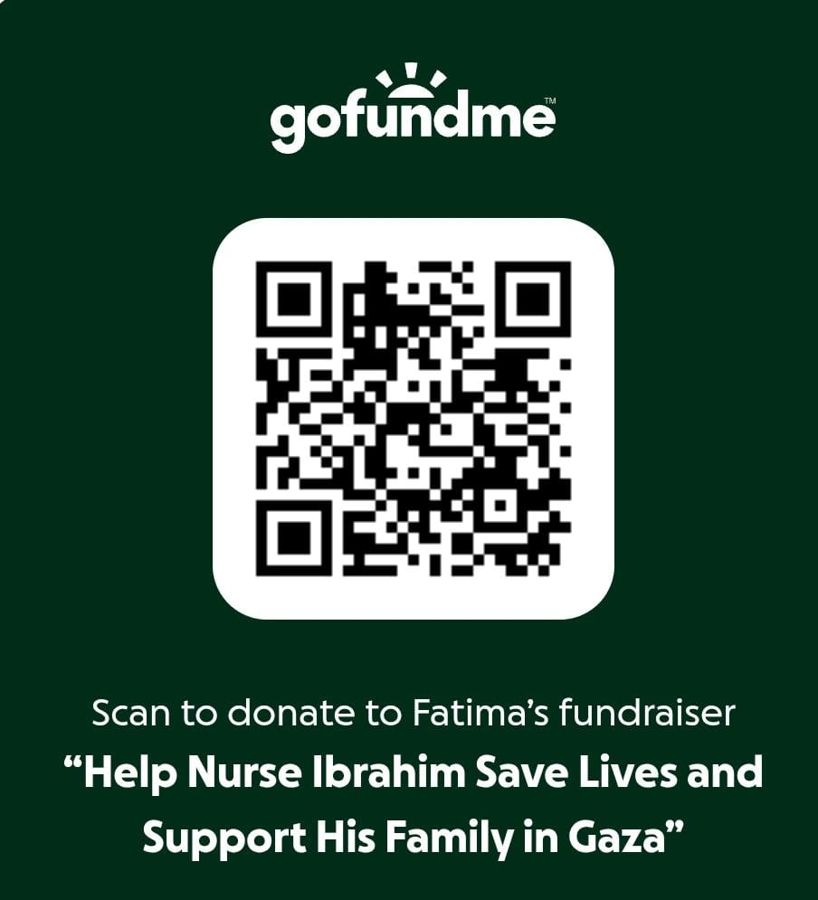

Medical Point North Gaza
Notfallversorgung dort, wo es kaum noch Hilfe gibt – und wo jede Minute über Leben und Tod entscheidet. Ein eigenständiges Projekt, begleitet und unterstützt von Dar Al-Rahma.
Jetzt unterstützen Einblicke ansehenHilfe, wo jede Minute zählt
Eine kleine Anlaufstelle in einer Notunterkunft in Beit Lahia – nahe der Gelben Linie. Hier werden Verletzte stabilisiert, bis der Krankenwagen kommt.
So lange braucht ein Krankenwagen nach Schilderung des Teams, bis er bei einem Verletzten ist. Für viele Schwerverletzte zu lange – ohne sofortige Versorgung würden sie die Wartezeit nicht überleben.
Lamees richtete in der Notunterkunft ein kleines medizinisches Zentrum ein – vorher versorgte Ibrahim Verletzte vor seinem eigenen Zelt.
Angehender Krankenpfleger, kurz vor dem Abschluss, früher Freiwilliger in Krankenhäusern und Rettungsteams im Norden Gazas. Heute arbeitet er wie ein Notfallmediziner.
Warum es den Medical Point gibtEin zerstörtes Gesundheitssystem
Im Norden des Gazastreifens ist das Gesundheitssystem weitgehend zerstört, besonders in Beit Lahia. Nach Schilderung des Teams vor Ort bekommen die Menschen dort weder in Notfällen noch im Alltag ausreichend Hilfe – und immer wieder kommen viele Verletzte auf einmal an.
Wie alles anfingVom eigenen Zelt zur festen Anlaufstelle
- 1
Vor dem eigenen Zelt
Ibrahim begann damit, Verletzte vor seinem eigenen Zelt zu versorgen – mit Material, das ihm Freunde gaben.
- 2
Es reichte nicht mehr
Der Bedarf wuchs schneller, als ein Einzelner mit einfachsten Mitteln helfen konnte.
- 3
Eine feste Anlaufstelle
Lamees übernahm das Projekt und richtete in der Notunterkunft ein kleines medizinisches Zentrum ein.
Was dort geschiehtVom Notfall bis zur täglichen Versorgung
- Schwerste Verletzungen: Blutungen stillen, Verletzte stabilisieren, damit sie den Transport ins Krankenhaus überleben.
- Notfallmedizin: auch Eingriffe, die sonst Notärzten gehören – etwa bei einem Pneumothorax, wenn die Lunge zusammenfällt.
- Wunden nähen nach Splitterverletzungen und Stürzen auf Trümmer.
- Verbrennungen, wie sie in Zelten und an Essensausgaben immer wieder vorkommen.
- Chronisch Kranke wie Menschen mit Diabetes.
- Nachbehandlung: Verbandswechsel, Antibiotika und Schmerzmittel über Wochen.
Improvisieren, um Leben zu rettenEs fehlt an fast allem
Material, Geräte und Medikamente sind knapp. Ibrahim funktioniert um, was da ist, damit es trotzdem funktioniert. Dass unter solchen Bedingungen überhaupt Notfallversorgung möglich ist, verdanken viele Menschen seinem Wissen, seiner Ruhe und seinem Einfallsreichtum.
Ein Tag im Medical Point
Verbände wechseln, Medikamente ausgeben, Kinder untersuchen, Blutdruck messen – die tägliche Arbeit im Zelt. Bild antippen für die Großansicht.
Direkt aus dem Zelt
Ein Junge, zweimal gerettet
Zweimal hat Ibrahim diesen Jungen erstversorgt – ohne Narkose und ohne richtiges Wundmaterial. Die Bilder zeigen Wunden und Verbrennungen.
- 1
Splitter in der Dusche
Der Junge wusch sich gerade in einer selbstgebauten Dusche, als in der Nähe eine Bombe einschlug. Splitter rissen tiefe Fleischwunden in seinen Rücken, die genäht werden mussten.
- 2
Heiße Suppe bei der Essensausgabe
Später, im Gedränge an einer Suppenausgabe, wurde heiße Suppe über seinen Körper geschüttet – schwere Verbrennungen an Schulter, Rücken und Hals.
- 3
Wochen der Behandlung
Ohne Narkose und mit dem wenigen Material, das da war, hat Ibrahim die Brandwunden immer wieder gespült, eingecremt und neu verbunden. So konnte er Infektionen und schwere Komplikationen verhindern – die Wunden begannen zu heilen.
Wenn jede Minute zählt
So sieht die Notfallversorgung aus, wenn Verletzte direkt nach einem Angriff ankommen.
8 Bilder von Notfällen anzeigenAchtung: schwere Verletzungen und Blut. Die Bilder sind verschwommen – einmal antippen zeigt das Bild, zweimal öffnet die Großansicht.
Was gebraucht wird
Notfallmaterial
Material zum Stillen schwerer Blutungen und zur Versorgung von Schwerverletzten.
Verbands- & Nahtmaterial
Kompressen, Binden, Pflaster, Desinfektion, Nahtmaterial.
Medikamente
Antibiotika, Schmerzmittel, Salben für Brandwunden, Mittel für chronisch Kranke wie Diabetiker.
Ausstattung
Grundausstattung für eine Anlaufstelle, die jeden Tag offen ist.
Hilf Ibrahim, Leben zu retten

Fatima hat für den Medical Point eine Spendenaktion auf GoFundMe gestartet: „Help Nurse Ibrahim Save Lives and Support His Family in Gaza“. Jede Spende hilft, Verbandsmaterial, Medikamente und Notfallausrüstung zu kaufen – und Ibrahim und seine Familie zu unterstützen.
QR-Code mit der Handykamera scannen, um zur Spendenseite zu gelangen.
Die Spenden gehen direkt an die Spendenaktion, nicht an Dar Al-Rahma. Eine Spendenquittung ist darüber nicht möglich.
Hand in Hand mit Cat RescueZwei Projekte, ein Netzwerk
In Gaza helfen Menschen, die Menschen versorgen, auch Tieren – und umgekehrt. Ibrahim hat auch schon eine Katze versorgt, die getroffen worden war. Der Medical Point und Cat Rescue liegen beide in Nord-Gaza und sind Teil desselben Netzwerks. Wissen, Material und Wege zu teilen, gehört für uns zum Kreislauf des Miteinanders.